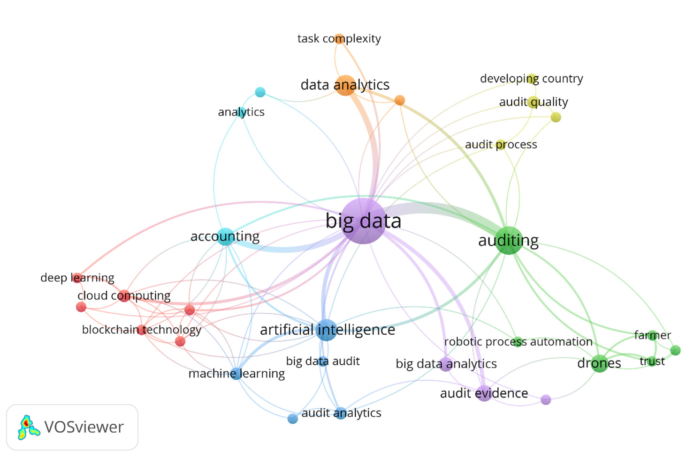
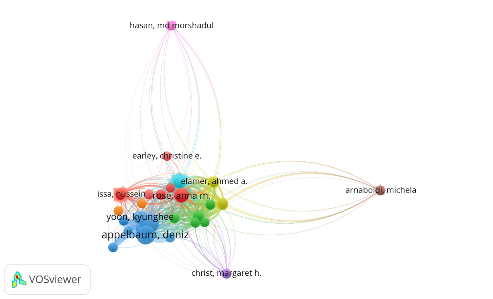
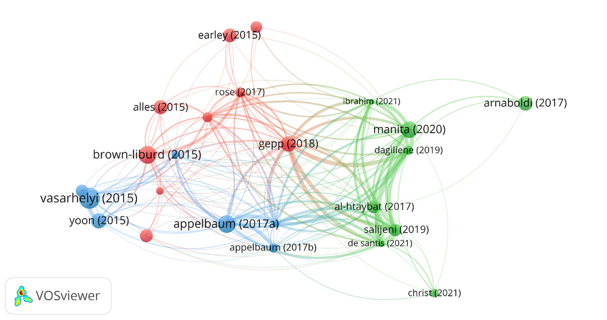

Tác Động Của Công Nghệ Drone Tích Hợp Trí Tuệ Nhân Tạo (AI) Và Dữ Liệu Lớn Đến Hiệu Quả Kiểm Toán Độc Lập, Tính Bền Vững Và Chất Lượng Báo Cáo Tài Chính Tại Thị Trường Mới Nổi
Kiểm kê vật chất hàng tồn kho (Physical Inventory Observation) và xác minh tài sản cố định hiện trường luôn là một trong những thủ tục kiểm toán tốn kém nhân lực, nguy hiểm và tiềm ẩn nhiều rủi ro sai sót trọng yếu nhất trong kiểm toán báo cáo tài chính độc lập (External Auditing). Các phương pháp truyền thống vốn phụ thuộc vào việc kiểm toán viên đi bộ đếm chọn mẫu một tỷ lệ nhỏ (5%–10%) trong các kho bãi khổng lồ, bộc lộ sự bất lực trước những thủ đoạn gian lận tinh vi (như khai khống hàng tồn kho ảo, tráo đổi bao bì rỗng ruột).
Công trình nghiên cứu toàn diện của Alhazmi, Islam và Prokofieva (2025) trên tạp chí Accounting and Auditing (MDPI) khảo sát bước chuyển dịch lịch sử sang Kiểm toán Kỹ thuật số (Digital Auditing) thông qua sự kết hợp cộng hưởng giữa Công nghệ Drone tự hành tích hợp Thị giác máy tính (AI-Integrated Drones) và Phân tích Dữ liệu Lớn (Big Data Analytics). Mô hình chuyển đổi từ kiểm toán chọn mẫu sang kiểm toán toàn bộ 100% quần thể, giúp đo thể tích các kho quặng, bồn dầu và đếm hàng ngàn pallet trong vài giờ với độ chính xác trên 99%, đồng thời nâng cao tính liêm chính của bằng chứng kiểm toán theo chuẩn mực ISA/VSA 501.
Nghiên cứu khẳng định tác động to lớn tại các thị trường mới nổi trong việc rút ngắn độ trễ phát hành báo cáo kiểm toán, tiết kiệm chi phí di chuyển và đóng góp thiết thực cho mục tiêu phát triển bền vững (ESG) bằng việc giảm thiểu phát thải khí nhà kính.
1 Bối Cảnh: Nỗi Ám Ảnh Hàng Tồn Kho Trong Kiểm Toán Tài Chính
Hàng tồn kho là một trong những khoản mục có giá trị lớn nhất nhưng lại khó kiểm chứng nhất trên Báo cáo tài chính. Trong lịch sử kiểm toán thế giới, hàng loạt vụ đại bê bối tài chính bắt nguồn từ việc kiểm toán viên bị ban lãnh đạo công ty đánh lừa khi kiểm kê hiện trường:
- Vụ bê bối Salad Oil Scandal: Doanh nghiệp đổ đầy nước vào các bồn chứa khổng lồ và chỉ đổ một lớp dầu ăn mỏng nổi lên trên để lừa kiểm toán viên khi mở nắp kiểm tra!
- Gian lận kho quặng và gỗ tròn: Doanh nghiệp xếp các kiện gỗ hoặc đống quặng rỗng ruột ở giữa, chỉ xếp hàng thật ở bên ngoài để kiểm toán viên đếm mẫu không phát hiện được.
- Rủi ro kiểm toán viên con người: Vào ngày khóa sổ 31/12, các kho bãi thường có thời tiết khắc nghiệt, bụi bặm. Việc kiểm toán viên đi bộ cầm bảng kê giấy kiểm tra từng pallet ở độ cao 15 mét là cực kỳ nguy hiểm, chậm chạp và sai số rất cao.
Chuẩn mực quy định kiểm toán viên phải thu thập đầy đủ bằng chứng thích hợp về sự hiện hữu và tình trạng vật chất của hàng tồn kho. Khi kiểm kê thủ công chỉ chọn mẫu được 5%–10%, 90% rủi ro còn lại nằm ở phần chưa kiểm tra. Drone tích hợp AI chính là chìa khóa giải quyết bài toán này.
2 Mô Hình Hệ Thống Drone + AI + Big Data
Hệ thống kiểm toán hiện trường số hóa kết nối chặt chẽ giữa 3 thành phần cốt lõi:

2.1. Cảm Biến LiDAR Quét 3D & Quang Học Đa Quang Phổ
Drone bay theo đường bay được lập trình sẵn bằng GPS, sử dụng cảm biến LiDAR bắn hàng triệu tia laser mỗi giây để tái tạo mô hình không gian 3 chiều (3D Point Cloud):

Nhờ đó, thể tích của các đống quặng, bãi than đá hoặc nông sản khổng lồ được tính toán với độ chính xác milimet, loại bỏ hoàn toàn các phương pháp ước lượng võ đoán bằng mắt của kiểm toán viên trước đây.
2.2. Nhận Diện & Đếm Tự Động Bằng Thuật Toán YOLO (Computer Vision)
Camera 4K trên Drone truyền hình ảnh trực tiếp về mô hình nhận diện đối tượng (YOLOv8/YOLOv10) để tự động nhận diện mã vạch, đếm từng thùng hàng và phát hiện bao bì hư hỏng, rách nát để trích lập dự phòng giảm giá.
2.3. Đối Chiếu Thời Gian Thực Với Hệ Thống ERP
Dữ liệu đếm được tự động đẩy về hệ thống Big Data để đối chiếu với sổ phụ kế toán trong kho:

3 Kết Quả So Sánh Hiệu Năng Vượt Trội
Nghiên cứu của Đại học Victoria khẳng định bước nhảy vọt về năng suất và độ tin cậy:
| Tiêu Chí So Sánh | Kiểm Toán Thủ Công Truyền Thống | Kiểm Toán Drone + AI + Big Data | Mức Độ Cải Thiện |
|---|---|---|---|
| Phạm vi kiểm tra thực tế | 5% – 10% (Chọn mẫu nhỏ) | 100% (Toàn bộ quần thể) | Kiểm toán 100% quần thể |
| Thời gian kiểm kê kho 50.000 m² | 5 – 7 ngày làm việc | 2 – 3 giờ bay | Nhanh hơn 95% |
| Độ chính xác số lượng | 88% – 93% | 99,2% – 99,8% | Gần như tuyệt đối |
| Rủi ro an toàn lao động | Cao (Leo trèo nguy hiểm) | Gần bằng 0 | Bảo vệ con người |
| Độ trễ báo cáo kiểm toán | 45 – 90 ngày sau khóa sổ | 15 – 30 ngày | Tăng tính kịp thời |
4 Ý Nghĩa Cho Thị Trường Mới Nổi & Mục Tiêu Bền Vững (ESG)
Tại các thị trường mới nổi như Việt Nam, việc ứng dụng công nghệ Drone AI mang lại 2 giá trị chiến lược:
1. Thu hẹp khoảng cách kỳ vọng kiểm toán (Audit Expectation Gap): Các nhà đầu tư và cơ quan quản lý kỳ vọng kiểm toán viên phải đảm bảo không có hàng tồn kho ảo. Kiểm toán 100% quần thể bằng Drone đáp ứng trọn vẹn kỳ vọng này.
2. Đóng góp trực tiếp vào chỉ số phát triển bền vững (ESG): Cắt giảm hơn 85% chi phí và lượng khí thải carbon phát sinh từ việc đi lại của các đoàn kiểm toán, đồng thời cải thiện điều kiện làm việc và an toàn lao động cho kiểm toán viên.
- Câu hỏi 1 (Chuẩn mực Bằng chứng Kiểm toán): Theo Chuẩn mực Kiểm toán Việt Nam VSA 500 & VSA 501, hình ảnh và video do Drone bay thu thập có đủ điều kiện làm Bằng chứng kiểm toán hợp pháp hay không? Kiểm toán viên cần thiết lập những thủ tục kiểm soát nào (như chữ ký số, tem thời gian GPS bất biến) để bảo vệ tính toàn vẹn của bằng chứng trước tòa án?
- Câu hỏi 2 (Xử lý rủi ro bóng râm và góc khuất): Khi Drone bay vào vùng kho thiếu sáng hoặc các pallet hàng xếp chồng chéo che khuất lẫn nhau, thuật toán Computer Vision có thể đếm thiếu số lượng. Nếu bạn là Trưởng nhóm kiểm toán độc lập, bạn sẽ yêu cầu kiểm toán viên thực hiện thêm những thủ tục bù đắp nào để giải quyết rủi ro này?